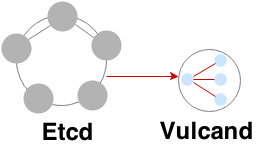

Quick Start¶

Vulcand uses Etcd as a configuration backend. See Etcd getting started guide for instructions.
The easiest way to install Vulcand is to pull the trusted build from the hub.docker.com and launch it in the container:
# download vulcand from the trusted build
docker pull mailgun/vulcand:v0.8.0-beta.2
# launch vulcand in a container
docker run -p 8182:8182 -p 8181:8181 mailgun/vulcand:v0.8.0-beta.2 /go/bin/vulcand -apiInterface=0.0.0.0 --etcd=http://172.17.42.1:4001
You can check if Vulcand is running by checking the logs of the container:
# check out the output from the container:
docker logs $(docker ps | grep vulcand | awk '{ print $1 }')
Dec 25 20:22:24.002: WARN PID:1 [supervisor.go:350] No frontends found
That was Vulcand complaining that there are no frontends specified
Example: setting up Vulcand¶
# Upsert backend and add a server to it
etcdctl set /vulcand/backends/b1/backend '{"Type": "http"}'
etcdctl set /vulcand/backends/b1/servers/srv1 '{"URL": "http://localhost:5000"}'
# Upsert a frontend connected to backend "b1" that matches path /
etcdctl set /vulcand/frontends/f1/frontend '{"Type": "http", "BackendId": "b1", "Route": "Path(`/`)"}'
# Upsert backend and add a server to it
vctl backend upsert -id b1
vctl server upsert -b b1 -id srv1 -url http://localhost:5000
# Upsert a frontend connected to backend "b1" that matches path /
vctl frontend upsert -id f1 -b b1 -route 'Path("/")'
# Upsert backend and add a server to it
curl -X POST -H "Content-Type: application/json" http://localhost:8182/v2/backends\
-d '{"Backend": {"Id":"b1", "Type":"http"}}'
curl -X POST -H "Content-Type: application/json" http://localhost:8182/v2/backends/b1/servers\
-d '{"Server": {"Id":"srv1", "URL":"http://localhost:5000"}}'
# Upsert a frontend connected to backend "b1" that matches path /
curl -X POST -H "Content-Type: application/json" http://localhost:8182/v2/frontends\
-d '{"Frontend": {"Id":"f1", "Type": "http", "BackendId": "b1", "Route": "Path(\"/\")"}}'